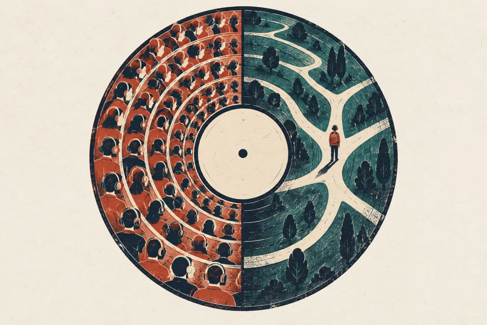

两张唱片 · 一首 Bonus Track
AI产品思维
收需求、辨需求、选需求、验需求，再一起做出来
AI 让“把东西做出来”变得很便宜。难的变成了：想清楚做什么、给谁做。
这套课跟着网易云音乐的故事走：需求从哪来，怎样从用户的一句话里听出真需求，怎样在一堆需求里挑出四两拨千斤的切口，又怎样证明自己判断对了。最后在工作坊里，和组员一起把点子交给 AI，做出第一个版本。

一条需求链
收 → 辨 → 选 → 验 → 做
四面各讲一步，按这个顺序听最顺；工作坊把四步串起来，做一遍。
第二张唱片
C 面收需求，D 面验需求
怎么用这套课
先听，再动手，最后交给 AI
先看视频A、B、C 面各配一集 6 分钟左右的视频，把故事和方法先过一遍。
在页面上动手每条 Track 都有一个小练习：分拣、追问、连线、淘金、拍板、做实验。电脑、手机都能做。
写出你的卡片体检卡、一页纸、需求池、验证计划，存在浏览器里；工作坊上一起用上，交给 AI 做出第一版。